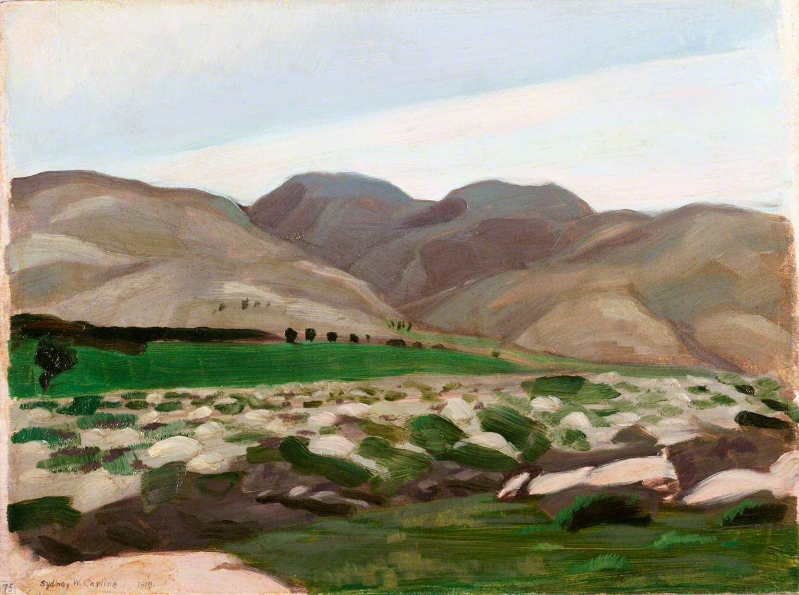

Salmo 121 — La Traducción Mister

⚠ Pintado en el lugar mismo, no compuesto para ilustrar este salmo. Carline fue un pintor de guerra oficial británico adscrito a la campaña de Palestina; sus propias notas de título, fechadas el 28 de enero de 1919, registran la tarde en que se pintó: «sacamos las cajas de óleos del coche y los dos nos pusimos a pintar un estudio del paisaje montañoso. Los montes de Judea son colinas onduladas, casi como los Downs glorificados, con terrazas cultivadas cubriendo todas las que no son demasiado rocosas». Los «Downs» son las colinas calizas del sur de Inglaterra — un pintor lejos de casa, buscando la comparación más cercana que tenía a mano. Estos son, llanamente y sin adorno, los montes reales a los que el v. 1 alza los ojos: sin un solo pico, sin punto de referencia, solo colina tras colina en el camino de subida a la ciudad.
_-_The_Hills_of_Judea_-_IWM_ART_4560_-_Imperial_War_Museums.jpg){kind=link}
Notas del traductor
Cada nota explica la decisión de esta traducción y la compara con el estante en español: la Reina-Valera y la NVI. Las citas de versiones con derechos reservados se limitan a frases cortas.
Un cántico para la subida
«Cántico de las subidas» (shir la-ma'alot, de alah, subir) encabeza quince salmos seguidos, 120–134 — la única serie de salmos consecutivos en todo el Salterio que comparten una sola etiqueta. Dos explicaciones conviven en la tradición judía, y ninguna anula a la otra: la más antigua dice que los cantaban los peregrinos al subir literalmente a Jerusalén, asentada en una cresta, para las tres fiestas de peregrinación (Deuteronomio 16:16); la Mishná en cambio liga el número al TEMPLO mismo, quince escalones que suben del Atrio de las Mujeres al Atrio de Israel, un salmo cantado en cada uno (Middot 2:5). Un cántico para una subida física, o un cántico para una escalera concreta — de cualquier modo, subir queda incorporado al título antes de que llegue la primera palabra de contenido.
¿Una pregunta, o una corrección?
El v. 1 termina en una verdadera pregunta hebrea — me-ayin yavo ezri, «de-dónde vendrá mi-ayuda» — y el v. 2 la responde: la ayuda es me-im Jehová, «de CON Jehová», una preposición distinta al simple «de» del v. 1. Leídos juntos, ese cambio puede sonar como una corrección discreta: los montes que el salmista mira eran también donde se levantaban los santuarios cananeos de altura, así que alzar los ojos hacia ellos no era automáticamente un acto religioso. Solo RV60 y NVI se comparan aquí: ambas imprimen el signo de interrogación («¿de dónde vendrá mi socorro?» / «¿de dónde ha de venir mi ayuda?»), dejando el v. 1 abierto hasta que el v. 2 lo cierra — a diferencia de la KJV inglesa, la única versión de este estante que lee el v. 1 como una AFIRMACIÓN llana en vez de una pregunta. Esta traducción sigue la lectura de pregunta, la posición mayoritaria, y la que le da algo que responder a la respuesta del v. 2.
La palabra sobre la que gira todo el salmo
Shamar, GUARDAR o CUIDAR, aparece seis veces en seis versículos (3, 4, 5, 7 dos veces, 8) — la mayor concentración de una sola raíz en cualquier salmo tan corto de todo el Salterio. Esta traducción mantiene «guardar/guardador» en las seis para que la repetición siga visible en español, tal como ya lo es en hebreo; NVI varía la palabra en cambio, alternando entre «cuida» y «guarda». RV60 hace lo mismo que esta traducción, sosteniendo guarda/guardador/guardará en todo el salmo. La misma raíz es la vocación humana en el jardín (Génesis 2:15, «que lo labrara y lo guardase») y lo que Caín rechaza («¿soy yo acaso guarda de mi hermano?», Génesis 4:9) — aquí se devuelve entera, seis veces, a Dios.
El dios al que hay que despertar
Dos verbos distintos para dormir, apilados: yanum (dar cabezadas, adormecerse) solo en el v. 3, y luego yanum Y yishan (dormir del todo) juntos en el v. 4. La duplicación suena a polémica contra una suposición antigua real — que la atención de un dios podía fallar, que el poder de un santuario podía dormitar. Elías hace la burla explícita en el monte Carmelo, contra los profetas de Baal: «gritad más fuerte — quizá está dormido y hay que despertarlo» (1 Reyes 18:27). Este salmo responde la pregunta antes de que se haga: ni dormita, ni duerme, ni una sola vez.
Sombra, sol, y una luna que aún podía hacer daño
Tzel, sombra, es la misma palabra para lo que da un árbol o un ala (la «sombra del Todopoderoso» del Salmo 91:1 es el mismo sustantivo) — alivio concreto, físico, frente a un sol que podía matar de verdad en un verano judaico sin sombra. El v. 6 lo empareja con algo más extraño para oídos modernos: la luna, que hiere de noche. RV60 dice que el sol «te fatigará»; NVI, que «te hará daño». El antiguo Cercano Oriente tenía una creencia popular real y extendida de que demasiada exposición a la luz de la luna podía enfermar o cegar a quien dormía — el español conserva el fósil de esa idea en «lunático». Comparta o no el salmista esa creencia concreta, la forma del versículo es un merismo: TODA hora, día o noche, sol o luna, queda cubierta.
Salida y entrada
«Tu salida y tu entrada» es un merismo — dos acciones opuestas que representan toda la vida ordinaria entre ellas, cada partida y cada regreso — RV60 lo cierra con «guardará», manteniendo la raíz del salmo hasta el final; NVI cambia a «cuidará». La promesa de Jehová a Jacob en Betel usa el mismo verbo para la misma totalidad: «yo estoy contigo, y te guardaré por dondequiera que fueres» (Génesis 28:15) — una promesa hecha a un solo hombre asustado que huye solo, generalizada aquí en un salmo que cualquier peregrino podría cantar en el camino de subida.
Notas sobre esta traducción
Decisiones. Shamar se traduce guardar / guardador en sus seis apariciones (vv. 3, 4, 5, 7 dos veces, 8) en vez de variarlo por estilo, para que la repetición que estructura el hebreo siga visible en español. El v. 1 se lee como pregunta en vez de la afirmación de la KJV inglesa, siguiendo al resto de este estante.
⚠ Nota sobre el orden: este es el sexto salmo en estas páginas (después del 1, el 23, el 27, el 51 y el 91) y el primer Cántico de las Subidas — los Salmos 120 y 122–134, los otros catorce salmos con el mismo título, quedan sin traducir aquí.